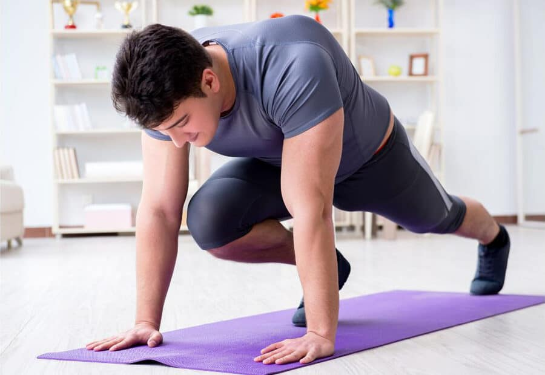
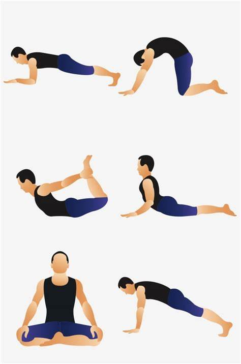

مارين القوة هي مجموعة من النشاطات البدنية المصممة لتحسين اللياقة العضلية، والمبدأ الأساسي لهذه التمارين هو تطبيق الحمل والإفراط في تحميل العضلات باستخدام الأوزان الحرة أو آلات الوزن أو وزن الجسم نفسه إذ يساعد ممارسة تمارين المقاومة بصورة منتظمة على منع الخسارة الطبيعية لكتلة العضلات الهزيلة التي تأتي مع الشيخوخة. هذه التمارين جزء مهم من اللياقة العامة لجميع الفئات العمريةوخاصةً الأشخاص الذين لديهم مشكلات صحية مثل السمنة والتهاب المفاصل وأمراض القلب فوائد تمارين القوة موجهة مباشرةً للعضلاتإذ تساهم هذه التمارين بتنشيط والبناء المستمر للعضلات والحفاظ على قوتهم بحالة جيدة مع التقدم بالعمر زيادة مرونة الجسم قوية العظام مع التقدم بالسن تضعف بنية العظام وتزداد احتمالية الإصابة بهشاشة العظام بالمقابل تساعد تمارين القوة على منع تدهورها من خلال تحفيز خلايا العظم على العمل مما يقوي من بنية العظام تقليل دهون الجسم وبناء عضلات خالية من الدهون تتخلص هذه التمارين من دهون الجسم وتساعدك على حرق المزيد من السعرات الحراريةإذ بزيادة كتلة العضلات يزداد معدل الأيض أثناء الراحة مما يحرق الجسم المزيد من السعرات الحرارية بناءً على ذلك يجب أن تتم ممارسة التمارين بصورة منتظمة مع نظام غذائي سليم لبناءعضلات خالية من الدهون تقليل الإصابة بالأمراض المزمنة

تمارين كارديو :هي تمارين تزيد من معدل ضربات القلب والتنفس، نتيجة لاستخدام مجموعة كبيرة من العضلات بشكل متكرر ومنتظم، إذ تُحسن تمارين الكارديو من وظيفة وأداء كلاً من القلب والرئتين وجهاز الدورة الدموية المعروف بجهاز الدوران، وللحصول على أفضل النتائج يوازن الكارديو بين ثلاثة عوامل أساسية وهي؛ تكرار التمرين، وكثافته، ومدته، ولكن قبل البدء يجب الحرص على القيام بتمارين الإحماء، وأخذ من 5 إلى 10 دقائق للراحة قبل الانتهاء، ومن الأمثلة على هذه التمارين؛ السباحة، وركوب الخيل، والمشي، والركض، وغيرها فوائد تمارين كارديو زيادة القدرة على التحكم بالوزن حيث أكدت دراسات علمية على أنّ ممارسة تمارين الكارديو متوسطة الشدة لمدة 150 دقيقة أسبوعيًا ستساعد الشخص في الحفاظ على وزنه مع مرور الوقت. تحسين الحالة المزاجية حيث أثبتت بعض الدراسات أن ممارسة تمارين الكارديو تحسن من المزاج وتزيد من الشعور بالفرح، من خلال زيادة إفراز هرمون إندورفي
تاج الإنسان إلى امتلاك نسبة مرونة جيدة في جسمه؛ حتى تساعده على تأدية العديد من الحركات والأنشطة بشكلٍ جيد وسلس، وتحديداً للأشخاص الذين يمارسون التمارين الرياضية، وسوف نتناول فيما يلي أبرز التمارين والتدريبات الرياضية التي تساعد على زيادة مرونة الجسم، بحيث تتضمن شدّ اليدين يتمّ وضع اليدين وراء الظهر وتثبيتهما جيداً، وإمساك قطعة قماشية وهما مثبتتان على نفس الوضعية؛ حتى تزيد مرونة الأكتاف، ويصنّف هذا التمرين كأحد تمارين الإحماء
 body { font-family: Arial, sans-serif; background-color: #f0f0f0; color: #333; margin: 20px;} h1 {color: #007bff; text-align: center; font-size: 24px;} p {font-size: 18px; line-height: 1.6;}